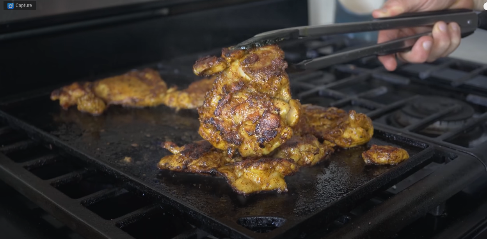

Grilled chicken, lightly browned, charred with blotches of crisp edges,
the skin of the chicken looks almost painted towards a light golden brown.
Resources needed
- Green eggs and ham
- Leprechaun liver
- Rainbow Mayonaise
- Himalayan Salt
- Blue Pepper
Preparation Instructions
- Put the all resources in a blender, pour 2 cups of water in the blender
and mix till the blend thins out to a nice lumpy consistency.
- Now we vaccuum seal the blend in a plastic bag and we wait a day
for the flavors to get to know each other.
- Sous vide time! Heat a full pot of water until boil, and drop in your mix
and boil for 10minutes. Cool it in the freezer for another day and there you
go, synthetic chicken ready to be cooked whenever you feel like it!